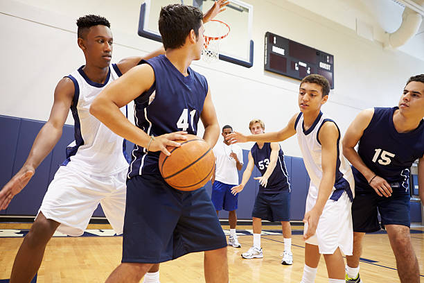
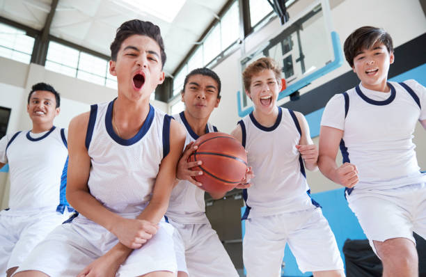

Senior Camp (Ages 14-17)
In our Senior Camp, former Boston College star, Jeff Connors, challenges his athletes to to bring their games to the next level by running them through drills, conditioning excercises, and running 5v5 games. This high intensity camp starts June 1,2021 and runs through August 28,2021. Jeff gives a verbal gaurantee to all parents that he will turn their kids into stronger, more skilled, and smarter athletes. With his experience with college training, Jeff has a formula for his workouts that are meant to get the most out of every athlete without pushing them to the point of exhaustion. The Senior Camp also goes down to Connecticut from August 20th-22nd, to participate in the annual 'Youth Skills Challenge', where each program puts together multiple teams and competes in a tournament hosted by Boston Celtics Legend, Kevin Garnett. Our Senior Program has been recognized on 5 seperate occasions as a top 20 youth basketball progam in the country, and Jeff Connors looks to add another award to the program this summer.

